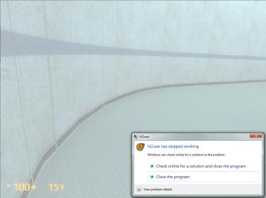

Hello all! Let me take this time to say thank you for all your hard work, this mod/game is beautiful. But, alas, I ran into a little problem. I seem to crash every time I try to turn the corner after walking through the 2 doors into the blue area (pic below). I’ve tried multiple fixes… updating drivers, turning down visuals even though its recommended for everything on high, turning off background programs, etc. etc.
I give you my specs first:
Windows 7 Ultimate SP1 64-bit
AMD Radeon HD 3870
AMD Phenom II X6 1045T Processor 2.70 GHz
8 GB Ram
Don’t know where to find all the information, but I would suspect this is good enough. Now here is the minidump:

Pic mentioned above:
hl2_4104_crash_2012_9_14T20_17_32C0.mdmp (146 KB)
Hope to hear back soon, I cannot wait to get this working. Thank you in advance for all your help.
{EDIT}: The 2 doors I am talking about is at the very beginning of the game, before anything even starts happening.